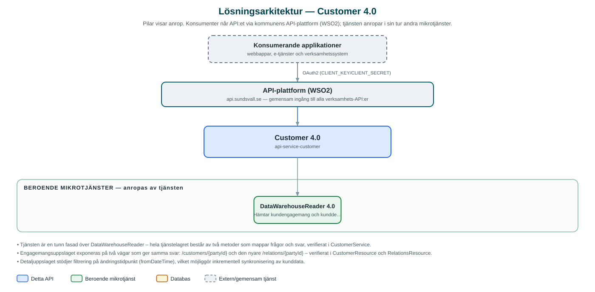

Customer
Slår upp kundrelationer och kunduppgifter hos kommunkoncernens leverantörer – till exempel el- och fjärrvärmebolagen – utifrån en parts identitet.
Om API:et
Customer ger kommunens applikationer ett enkelt sätt att ta reda på vilka kundrelationer en invånare eller ett företag har hos leverantörerna inom kommunkoncernen, till exempel Sundsvall Energi och Sundsvall Elnät. Utifrån ett partyId svarar API:et med kundnummer och kundtyp per leverantör.
Utöver engagemangsuppslaget levererar API:et detaljerade kunduppgifter – namn, adress och kontaktuppgifter – för kunder kopplade till en viss leverantörsorganisation, med stöd för att bara hämta uppgifter som ändrats efter en viss tidpunkt. Det gör att konsumerande system kan synkronisera kunddata inkrementellt.
Tjänsten är en tillståndslös fasad ovanpå DataWarehouseReader, som i sin tur läser ur kommunkoncernens datalager. Ingen kunddata lagras i tjänsten.
Det här gör API:et
- Kundrelationer per part – Hämtar en parts kundengagemang hos koncernens leverantörer utifrån partyId, med kundnummer och kundtyp per relation.
- Detaljerade kunduppgifter – Namn, adress och kontaktuppgifter för kunder kopplade till en viss leverantörsorganisation.
- Inkrementell synkronisering – Detaljuppslaget kan avgränsas till uppgifter ändrade efter en angiven tidpunkt, för effektiv datasynkronisering.
- Paginering och sortering – Detaljsvaren pagineras och kan sorteras enligt anroparens önskemål.
API-dokumentation
API:ets samtliga resurser, parametrar och datamodeller finns beskrivna i en OpenAPI-specifikation som är hämtad ur källkodsförrådet. Den kan utforskas interaktivt i Swagger UI eller laddas ner som YAML.
Teknisk dokumentation
Nedan beskrivs hur tjänsten är uppbyggd, vilka andra tjänster den anropar och vad som krävs för att driftsätta den. Informationen är härledd ur källkoden och dess konfiguration på GitHub.
Arkitektur

API:et är en mikrotjänst (Java 25, Spring Boot via kommunens gemensamma tjänsteplattform dept44 (8.0.8), byggd med Maven). Konsumenter når tjänsten via kommunens gemensamma API-plattform (WSO2) på api.sundsvall.se – tjänsten anropas aldrig direkt. Tjänsten anropar i sin tur andra mikrotjänster i kommunens tjänstelandskap.
Teknikstack
- Språk: Java 25
- Ramverk: Spring Boot via kommunens gemensamma tjänsteplattform dept44 (8.0.8), byggd med Maven
- Övrigt: Feign-klient genererad från DataWarehouseReaders API-kontrakt, Resilience4j (circuit breaker)
Beroenden till andra mikrotjänster
Tjänsten anropar följande mikrotjänster. Versionerna är hämtade ur källkodens integrationsklienter.
| Tjänst | Version | Användning |
|---|---|---|
| DataWarehouseReader | 4.0 | Hämtar kundengagemang och kunddetaljer ur kommunkoncernens datalager. |
Konfiguration och driftsättning
- application.yml med URL och OAuth2-klientuppgifter för DataWarehouseReader
- Konfigurerbara connect- och read-timeouts mot DataWarehouseReader
- Ingen databas – tjänsten är tillståndslös
- Anrop görs per kommun – municipalityId ingår i alla API-vägar
Noterbart ur källkoden
- Tjänsten är en tunn fasad över DataWarehouseReader – hela tjänstelagret består av två metoder som mappar frågor och svar, verifierat i CustomerService.
- Engagemangsuppslaget exponeras på två vägar som ger samma svar: /customers/{partyId} och den nyare /relations/{partyId} – verifierat i CustomerResource och RelationsResource.
- Detaljuppslaget stödjer filtrering på ändringstidpunkt (fromDateTime), vilket möjliggör inkrementell synkronisering av kunddata.
- 4xx-svar från DataWarehouseReader öppnar inte circuit breakern (ClientProblem ignoreras i Resilience4j-konfigurationen).
- Klientkoden mot DataWarehouseReader genereras vid bygge från det incheckade API-kontraktet (version 4.0).
Källkod
Källkoden är öppen och finns hos Sundsvalls kommun på GitHub. I källkodsförrådet finns även instruktioner för att klona, konfigurera och starta tjänsten i egen miljö.